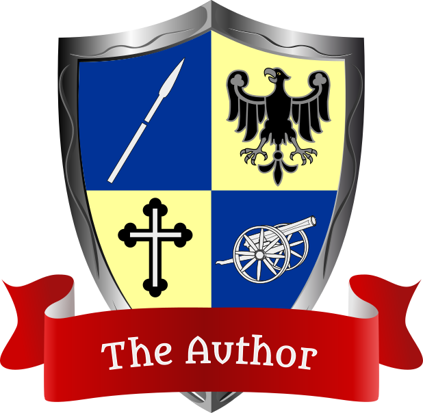
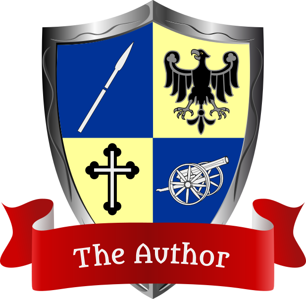

Design Knights
Who they are.
Design Knights
How it Began
Matthias Wittum and Christian Rehn independently got interested in how developers think, how they make design decisions and how they justify their decisions. Christian wrote his Master's thesis about design principles and principle languages and created principles-wiki.net while Matthias became a software architect and later a manager.
In 2013 Christian started working at 1&1 because Matthias could inspire him to join the Source Center. They put together their ideas and worked on a way to categorize developers based on their design decisions. This website is the result of that.
Within the following years, Matthias and Christian developed the (Software) Design Types, (Software) Design Matrix, and (Software) Design Cards. Because of the medieval fantasy-like theme that emerged, they started to call themselves the (Software) Design Knights.
Mission and Perspective
Communication is the hardest part of software development. If projects fail, it's mostly because of communication problems. For that reason the Software Design Knights try to improve communication among software developers.
They create tools and methods everybody can use free of charge. There are plenty of more ideas waiting to be realized. If you wanna provide feedback, feel free to do so.
Matthias and Christian
 
